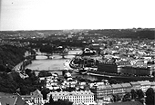
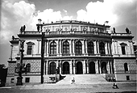

1998年7月8日発売
「交響組曲 もののけ姫」
作曲・編曲・演奏・プロデュース：久石譲
マリオ・クレメンス指揮
チェコ・フィルハーモニー管弦楽団
収録ホール：芸術家の家（ドヴォルザーク・ホール／プラハ1998年6月録音）
曲目
1.第一章アシタカせっ記（5：46）
※注「せっ記」の「せっ」は造語のため表示できません。
2.第二章TA・TA・RI・GAMI（6：42）
3.第三章旅立ち～西へ～（4：56）
4.第四章もののけ姫（4：41）※ピアノ：久石譲
5.第五章シシ神の森（6：08）
6.第六章レクイエム～呪われた力～（7：08）
7.第七章黄泉の世界～生と死のアダージョ～（7：18）
8.第八章アシタカとサン（4：27）※ピアノ：久石譲
TOTAL TIME(47:23)
発売：徳間ジャパンコミュニケーションズ
TKCA-71395
定価：3,059円（税込）2,913円（税抜）
このアルバムについて
昨年公開した映画「もののけ姫」の記録的な大ヒットと共に1997年7月に発売したサウンドトラックアルバムも約50万枚（1998年6月現在）のセールスと今もなお売れ続けています。サウンドトラックは本編の尺と曲順をそのままCDに落し込んだもので、映画をご覧になった方から、これを聴くと「映像シーンが浮かんで来て素晴しい」と言うご感想も多数頂きましたが、反面一曲のタイムが短い為、「もっと続きを聴きたい」と言うご要望も多数戴きました。
そこで、ご要望にお答えするべく、「もののけ姫」アルバム第3弾として昨年9月から企画が持ち上がり、同時に完成度の高いサウンドトラック以上のアルバムを創らなければならないとスタッフ一同使命感にかられていました。
結果、音楽プロデューサーの久石譲さんから「これから世界へ翔こうとしているもののけ姫をスラヴ色の強い一流のオーケストラでやってみよう。宮崎監督の持っている空気感のようなものと東欧のそれは、相通じるのではないか。」という提案があり、ヨーロッパ各地のオケをピックアップ。幾度となく打ち合わせを重ねた中、最終的に東欧の名門チェコ・フィルハーモニー管弦楽団に決定し、制作がスタートしました。
アルバムの内容も映画の構成を重視し、メインテーマとポイントの場面音楽をピックアップし、全8曲の組曲構成にしました。
ここでレコーディングにした、チェコと収録ホールについて少し触れてみましょう。
チェコ共和国（資料：1）（写真：1）は、ヨーロッパの中東部に位置する内陸の国。
大きくは、西部のボヘミア地方と東部のモラビア地方に分かれています。そのボヘミア地方にある首都プラハで今回のレコーディングは行われました。
プラハは、スメタナやドヴォルザークを生み、モーツァルトもゆかりの深い東欧屈指の音楽の都。街角では音楽家がヴァイオリンを弾き、毎日どこかでコンサートが開かれていてプラハの街は常に音楽で溢れています。1946年以来、毎年、この街を舞台に「プラハの春音楽祭」（5月12日～6月1日）が行われています。その初日は、プラハをこよなく愛したチェコ出身の作曲家スメタナの命日である5月12日。開幕曲は、スメタナの交響詩『わが祖国』で今年もウラディミール・ヴァーレク指揮、チェコ・フィルハーモニー管弦楽団の演奏により幕を開け、世界中のクラシックファンを魅了しました。その「プラハの春音楽祭」開幕を飾ったチェコ・フィルハーモニー管弦楽団（資料：2）が今回「もののけ姫」を演奏してくれました。日本生まれの「もののけ姫」をヨーロッパの演奏家たちがどのように表現してくれるのか、とても楽しみでした。
また、録音はヴルタヴァ川の辺りに建つ、クラシック音楽の殿堂「芸術家の家 Rudolfinum ドヴォルザークホール」（写真：2）で収録しました。この建物は、19世紀後半に建設され、ネオ・ルネッサンス様式による代表的建築として知られています。

写真1
写真2
（資料：1）
◆チェコ共和国 Ceska Republika（1997年12月現在）
首都：プラハ Praha
面積：約7万9000平方キロメートル（日本の約5分の1）
人種：チェコ人がほとんど。その他スロバキア人など。
人口：約1036万人
公用語：チェコ語。外国語としてはドイツ語と英語が使われる。
宗教：カトリック
通貨：単位はチェココルナ。補助通貨は、ハレル。
時差：日本より8時間遅れ。サマータイムは、7時間遅れ。
（資料：2）
◆チェコ・フィルハーモニー管弦楽団 Czech Philharmonic Orchestra
1896年ドヴォルザークの指揮で最初のコンサートを行い、既に結成100年を超えるというまさにヨーロッパを代表する名門のオーケストラ。
その第1回の指揮台に立ったドヴォルザークは新世界交響曲をはじめあらゆる分野で名曲を残した大作曲家ですが、その後もこのオーケストラにはマーラーやR.シュトラウスといった歴史的にも著名な音楽家が指揮台にのぼっている。
1997年1月の音楽監督ゲルト・アルブレヒトの辞任後、現在では音響監督ウラディミール・アシュケナージ、常任客演指揮者に小林研一郎、正指揮者にウラディミール・ヴァーレク、客演指揮者にSir.チャールズ・マッケラスがそれぞれ就任し、この4人体制で数多くの演奏活動を繰り広げている。
また、日本にも多くのファンをもち、1995年以来毎年来日を重ねている。
| 次のページへ |
| 日誌索引へ戻る |
| 「もののけ姫」トップページへ戻る |